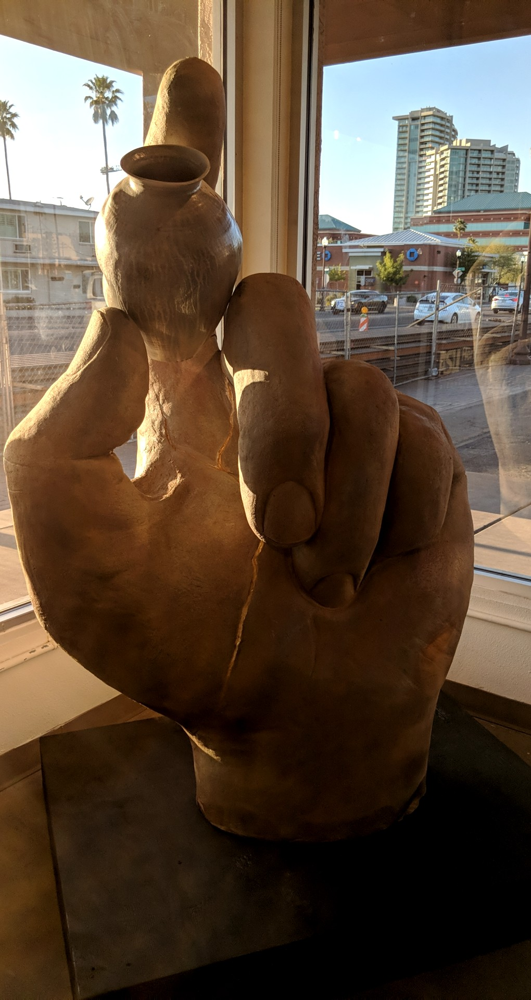
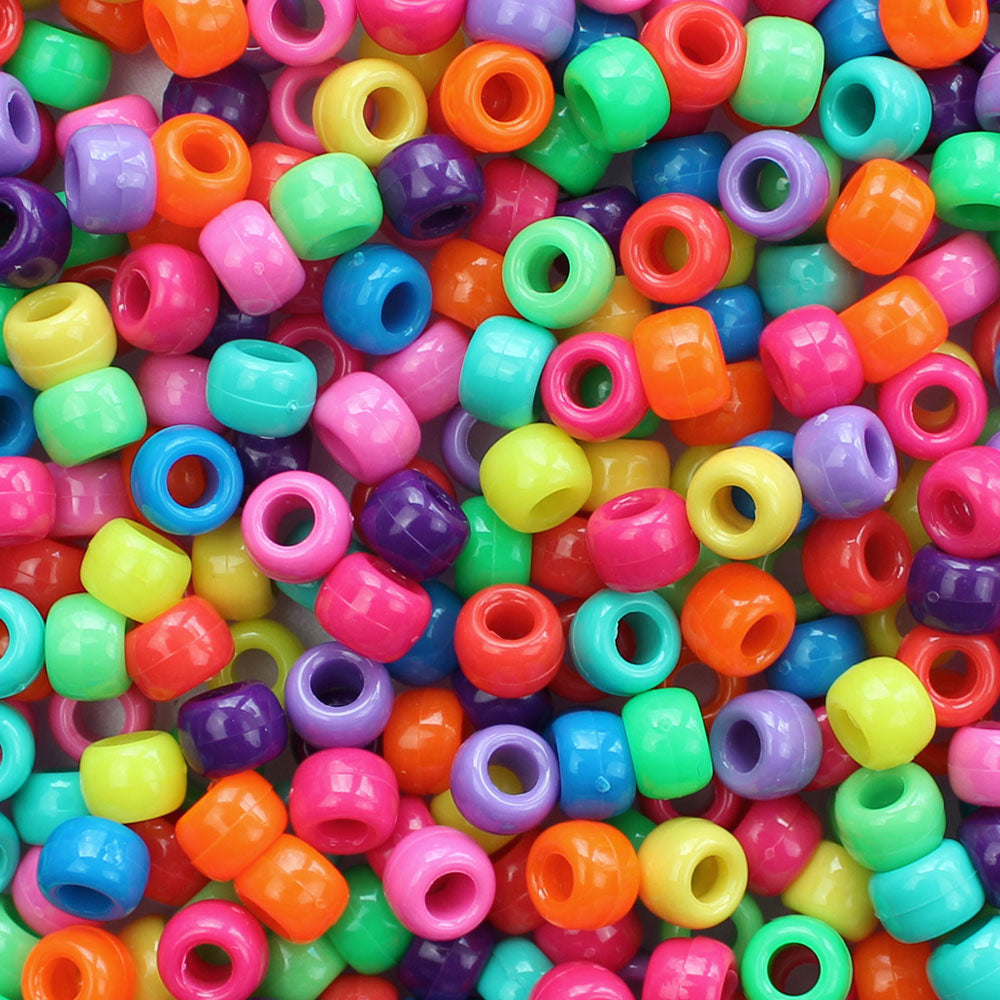
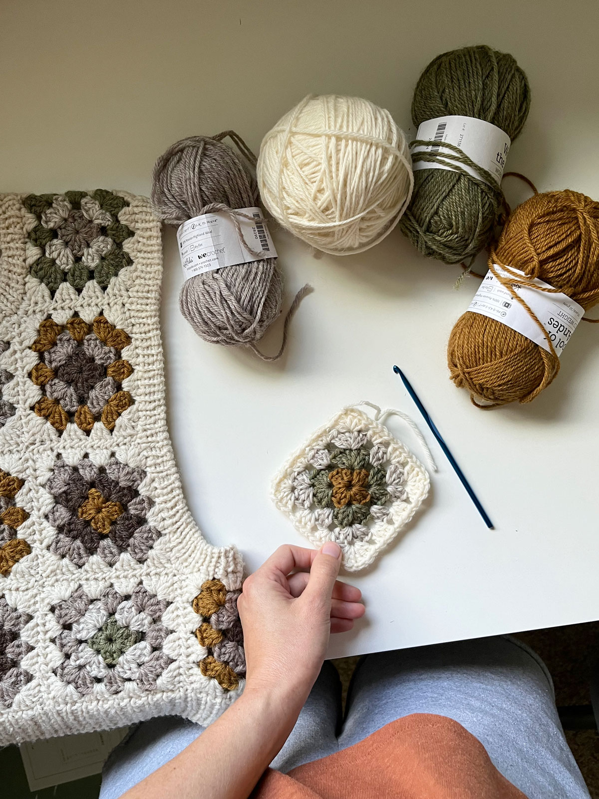

Projects
My projects so far are tributes from school, where many gave creative freedom on the form and overall direction.
Typography
Event Poster
Shapes, Color, and Composition Poster
Interests
My abilities aren't limited to my career path. As an artist, I possess a variety of skill sets in other mediums.
Ceramics

Jewelry-Making

Crochet
